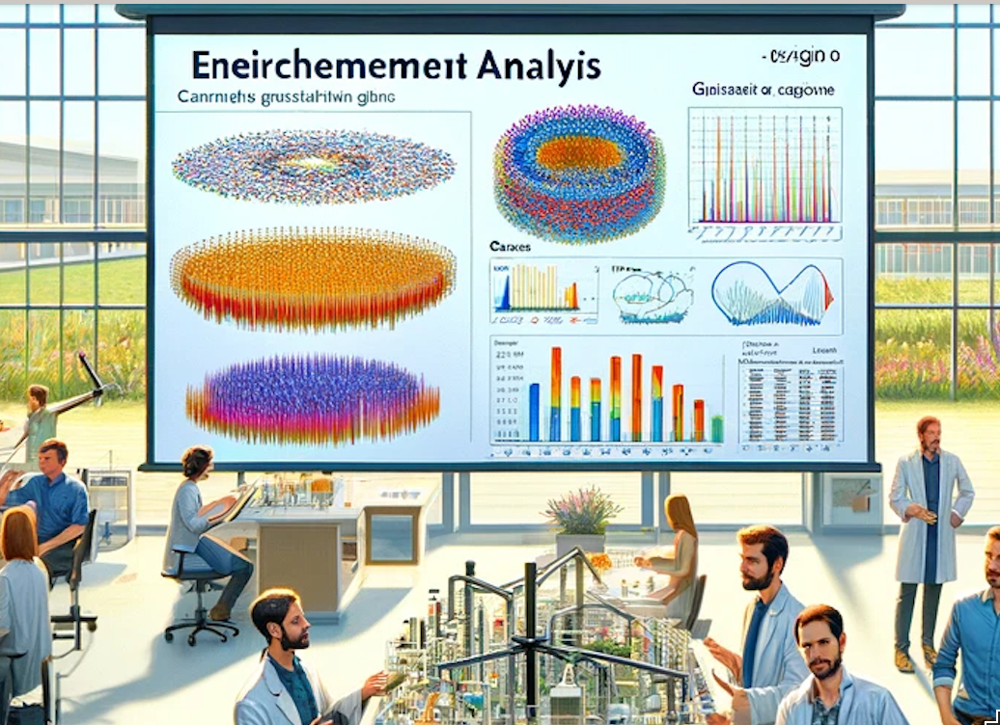
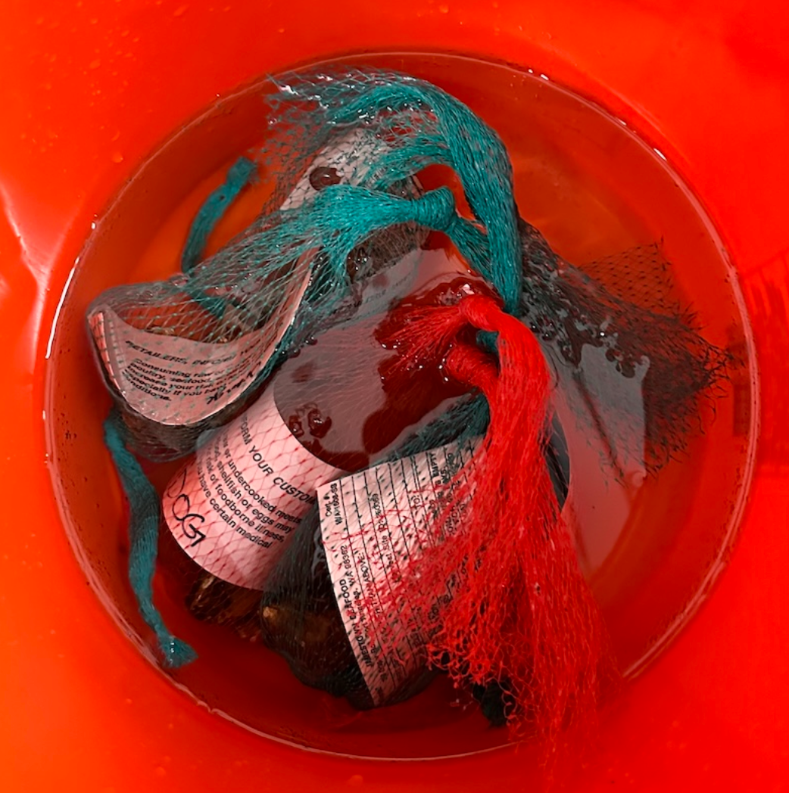
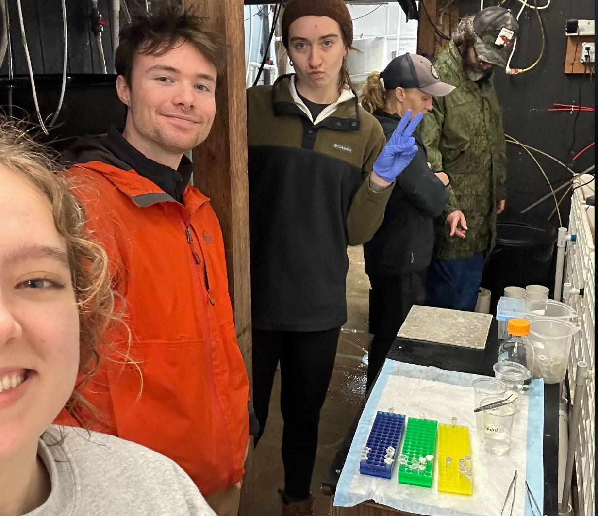
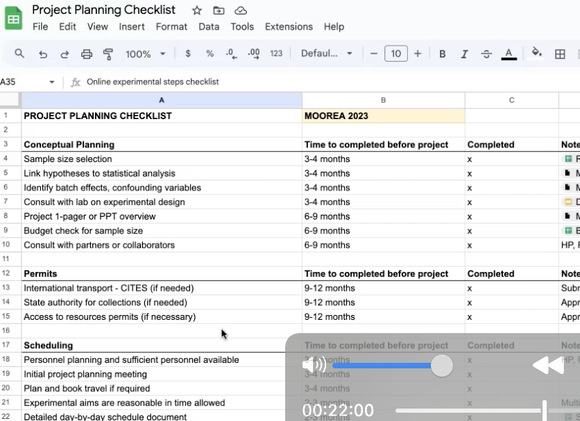
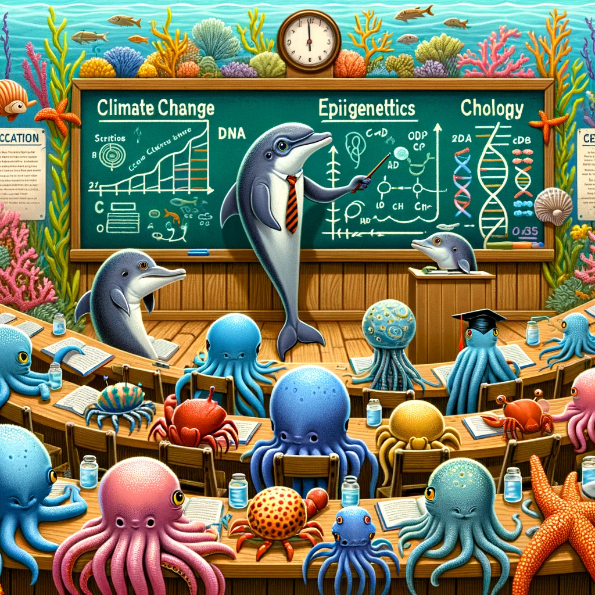
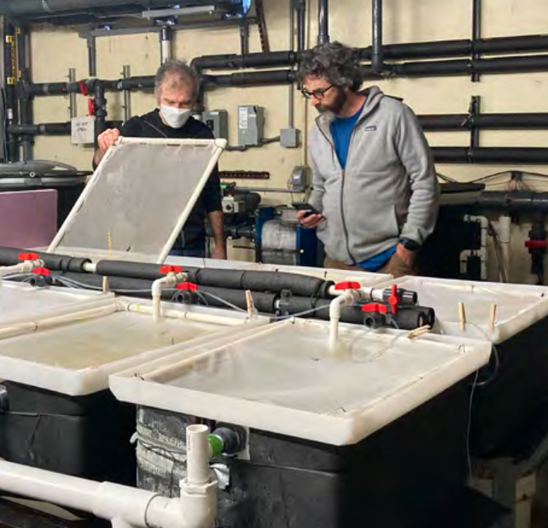
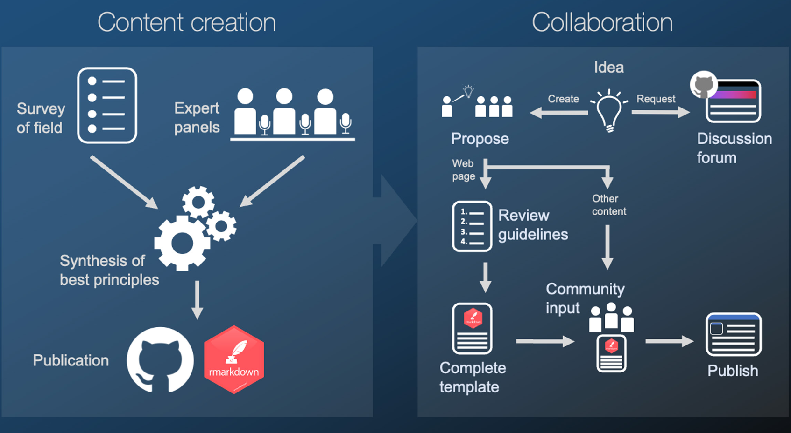
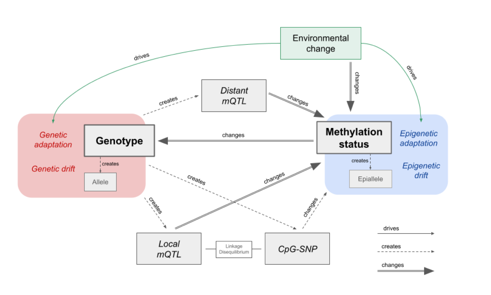

robertslab.info
raven
gannet
owl
eagle
apex
sam
steven
aspen
chris
zach
celeste
grace
kathleen
ariana
larken
noah
megan
eric
Submit an Issue
Lab Organization
Edit this site
News and Updates
News and Updates
Projects
Publications
Lab Members
Diversity, Equity, and Inclusion
Courses
News and Updates
Categories
All
(23)
Chile
(1)
LGBTQ+
(1)
acidication
(1)
aquaculture
(4)
clam
(1)
cod
(1)
code
(1)
conservation
(1)
course
(1)
dei
(1)
diversity
(1)
education
(1)
epigenetics
(2)
fhl
(1)
genome
(1)
genomics
(5)
highlight
(1)
inclusion
(1)
meeting
(2)
mentoring
(1)
methods
(5)
mussel
(1)
ostrea
(1)
oyster
(7)
paper
(3)
presentation
(1)
rna-seq
(1)
rnaseq
(1)
salmon
(1)
seastar
(2)
spotlight
(1)
stress
(4)
tag-seq
(1)
tools
(3)
triploid
(2)
website
(2)
wsn
(2)
Assessing Oyster Viability Under Environmental Stress
oyster
stress
Insights from LSAMP Summer Research Efforts
Aug 22, 2024
Intertidal Innovators
education
Community Showcase at Golden Garden Park combining art and science
Aug 19, 2024
Ostras en Chile
oyster
presentation
Oportunidades y desafíos para una diversificación acuícola
Aug 6, 2024
Exploring How Environmental Conditions Impact Atlantic Salmon’s Defense Against Sea Lice
salmon
epigenetics
A collboration with INCAR at University of Concepcion
Jul 1, 2024

Unraveling the Intricacies of Enrichment Analysis
methods
tools
A Peek into Our Lab Meeting
May 9, 2024

Hatchery Field Day at Point Whitney
methods
tools
Unveiling the Oyster Stress Testing Framework!
May 6, 2024

Hardening in oysters drives increased growth
oyster
aquaculture
It’s a stage specific thing
Mar 8, 2024
Decoding the Olympia Oyster
genomics
oyster
conservation
A Decade of Genomic Exploration and Conservation Insights
Feb 29, 2024

Are you really prepared?
methods
tools
An in depth discussion of why planning is key!
Feb 2, 2024

Sharing the Good Word of Marine Epigenetics
course
genomics
methods
website
A Dive into Steven’s Recent Austral Summer Institute Course at the University of Concepcion
Jan 19, 2024

Exploring the Impact of Marine Heatwaves on Pacific Cod
cod
genomics
epigenetics
rna-seq
Insights from CICOES Researchers
Jan 17, 2024
Clam Gonad RNAseq Analysis
rnaseq
aquaculture
clam
stress
Happy 2024!
Megan Ewing
Jan 4, 2024
Western Society of Naturalists
wsn
meeting
seastar
Grace #2’s meeting recap!
Grace Leuchtenberger
Nov 22, 2023
Celebrating LGBTQ+ in STEM
LGBTQ+
diversity
inclusion
dei
Feature article with Aspen
Nov 18, 2023
Western Society of Naturalists
wsn
meeting
seastar
Meeting Recap!
Grace Crandall
Nov 15, 2023
Insights from Pacific Oysters in a Heating Ocean
triploid
aquaculture
oyster
stress
A Commentary on our Recent Article
Nov 4, 2023
AquaMine
genomics
A Treasure Trove for Aquatic Genomics Research
Oct 23, 2023

MarineOmics.io
paper
genomics
methods
website
Steering the Future of Genomic Research in Aquatic Nonmodel Species
Oct 9, 2023
Unveiling the Blueprints of the Sea
mussel
genome
Chile
The Genome of Mytilus chilensis
Oct 4, 2023
Marine science mentoring over the summer at FHL
fhl
mentoring
spotlight
Feature on UW SAFS Website
Sep 18, 2023
Uncovering Population-specific Resilience to Ocean Acidification in the Olympia Oyster
paper
acidication
oyster
ostrea
tag-seq
A Deep Dive into Our Latest Publication
Steven Roberts
Sep 15, 2023
The Double-Edged Sword of Triploidy in Pacific Oysters
triploid
aquaculture
oyster
stress
New Research Highlights Increased Vulnerability to Climate Stressors
Steven Roberts
Sep 15, 2023

Genetics: Does it really matter?
paper
highlight
code
Here I will describe a recent…
Steven Roberts
Feb 18, 2023
No matching items